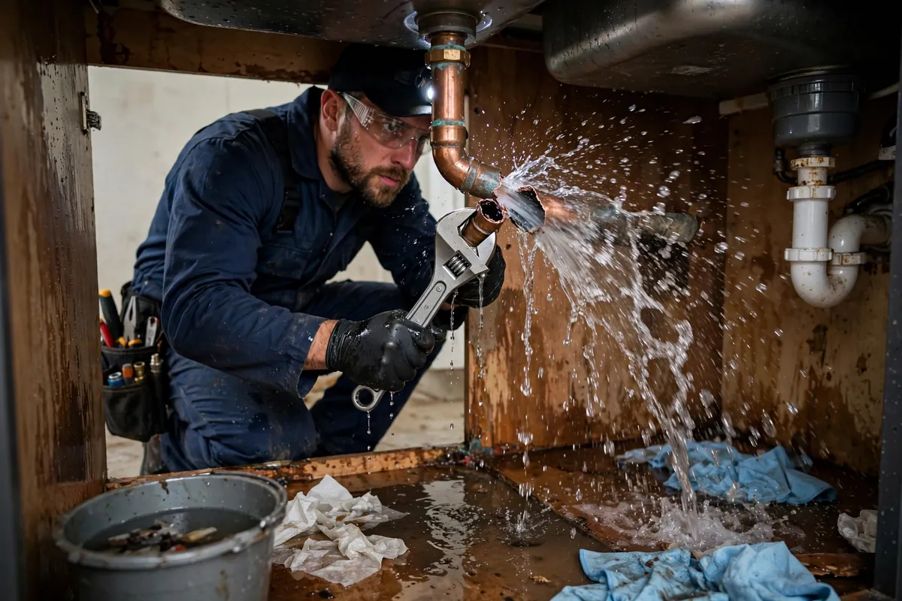

Burst Pipe Cleanup in Hollywood, FL
A burst pipe doesn't leak — it releases. A split supply line can discharge an enormous volume in the time it takes to find the shutoff valve, soaking rooms far from the break. Burst pipe cleanup in Hollywood, FL starts the moment the water stops: rapid extraction, opening the wall and ceiling cavities the water reached, and drying the structure before moisture settles in for the long haul.

Understanding Burst Pipe Cleanup in Hollywood
In South Florida, burst pipes are rarely about freezing. The usual causes are corrosion in aging copper, failed fittings, excessive water pressure, and polybutylene piping still present in older homes. Attic runs are a particular problem — a break overhead rains water down through insulation and ceiling drywall across multiple rooms. Slab leaks are the hidden variant: a pressurized line under the foundation that shows up as warm spots on the floor, high water bills, or damp flooring with no visible source.
Pressure is what makes burst-pipe losses destructive. Unlike a slow seep, pressurized water forces its way into wall cavities, under baseboards, and across floor assemblies in minutes. By the time the valve is closed, the footprint is often much larger than the visible puddle suggests. That is why moisture mapping matters so much here — the break point is obvious, but the full extent of saturation rarely is.
How We Handle the Job
Once the water supply is confirmed off, we extract standing water from every affected room and start opening the hidden paths: baseboards come off, wet drywall is cut where readings demand it, and attic insulation saturated from above is removed. Moisture meters map walls, ceilings, and floors so drying targets the real footprint. Air movers and dehumidifiers are placed for the structure, not just the open rooms — cavities only dry if air reaches them.
We verify with readings, not assumptions: walls, sill plates, and subflooring are checked until they reach their dry standard, including rooms that looked untouched. The break location itself is documented for your plumber and your insurer — the pipe repair is separate from the water damage response, and both need records. Related services such as emergency water extraction, structural drying, and flood cleanup often connect to the same loss depending on conditions on site.
Local Response and Insurance Support
Searching for burst pipe cleanup near me usually means you need help without delay. We answer emergency calls around the clock. Documentation — photos and moisture readings — supports conversations with your insurance carrier when the loss is sudden and accidental. We do not decide coverage; we provide clear technical information about the work performed.
When to Call
Call if you have active water, wet materials that are not drying, odors after a leak, or a backup that may involve contaminated water. Early action in Hollywood’s climate is almost always less disruptive than waiting. For neighborhood-specific service, see our service areas. For the full list of capabilities, visit all services.
Frequently Asked Questions
Where is my main water shutoff, and why does it matter?
It's usually near the water meter, in the garage, or on an exterior wall — and knowing its location before an emergency is the single most valuable thing a homeowner can do. Every minute of pressurized flow multiplies the damage. If you don't know where yours is, find it this weekend and make sure the valve actually turns.
The pipe is fixed — is the water damage handled too?
Not automatically. The plumber stops the source; the water already inside your walls, ceilings, and floors is a separate problem. Pressurized breaks soak cavities you can't see, and that moisture won't dry on its own in Florida humidity. Extraction and structural drying are still needed after the repair.
Can a burst pipe cause mold?
Any water intrusion left damp for a day or two can support microbial growth, and burst pipes soak the hidden cavities where it starts unseen — inside walls, above ceilings, under flooring. Fast extraction and verified drying are the prevention. If the loss sat wet for a while before discovery, say so upfront so the assessment accounts for it.
Does insurance cover burst pipe damage?
Sudden pipe bursts are among the most commonly covered water losses — the resulting damage to walls, floors, and ceilings is typically covered, though the pipe repair itself often isn't, and long-term corrosion failures may be excluded. Document the break location and all affected areas for your adjuster.